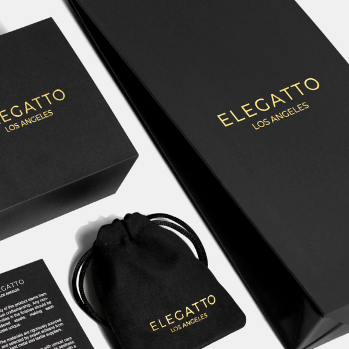
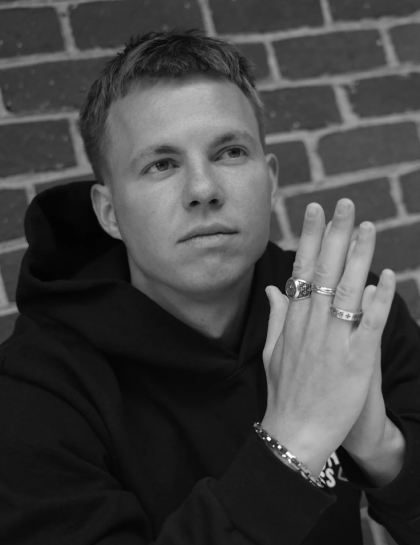

<section class="info__section">
    <div class="container">
        <div class="info__section-wrapper">
            <div class="info__block">
                <h2 class="info__title">
                    Історія
                </h2>
                <h2 class="info__title-2">
                    ELEGATTO
                </h2>
                <p class="info__text info__text-1">
                    Натхненний глибоким знайомством із могутністю та силою моря наших предків-мореплавців, 
                    <span>Влад Верченко</span>, дизайнер із прибережного містечка Лос-Анджелес, створив 
                    <span>Elegatto</span> – ювелірний бренд для мрійників, авантюристів і всіх, хто відчуває зв’язок із світом. Море. Він використав ці емоції, створивши колекцію унікальних ювелірних виробів, які передають 
                    <span>суть океану та дух пригод</span> у поєднанні з класичною ноткою елегантності. 
                </p>
                <p class="info__text info__text-2">
                    Ми розробили позачасові форми, органічні форми та елегантні природні матеріали з багатою текстурою, земляними відтінками та приголомшливими виразними речами з прискіпливою увагою до деталей і глибоким 
                    <span>поціновуванням краси природи.</span>
                </p>
                <div class="info__decor">
                    
                    
                </div>
            </div>
        </div>
    </div>
</section>